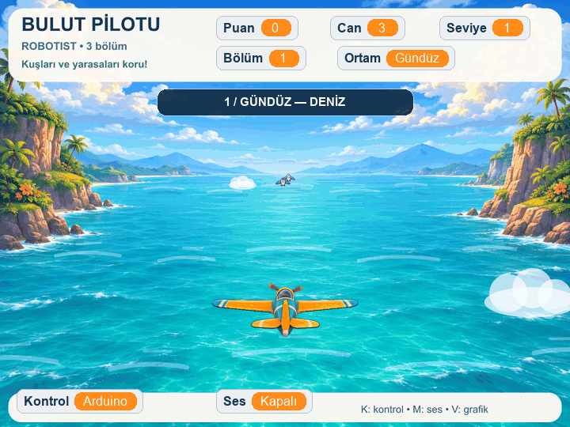

Robotist · Öğrenci paketi
Bulut Pilotu
Joystick'ini bağla, girişlerini test et ve üç farklı gökyüzünde uçuşa başla. Oyun bilgisayarında çalışır; Arduino Uno USB ile kumanda eder.
1Paketi aç, mBlock'u kur
- ZIP dosyasını bir klasöre ayıklayın. Dosyaları ZIP içinden çalıştırmayın.
- Resmi sitede mBlock PC sürümünü seçin: Windows 64 bit, Mac veya Apple M1/M2.
- Kurulumdan sonra mBlock'u açın.
mblock.cc/pages/downloads · 4 Kasım 2026'da sürüm 5.6.0 doğrulandı. Kurucu bu pakete dahil değildir.
İlk kurulumda internet gerekebilir. Projedeki resmi Arduino Uno aygıtı ve Data Chart uzantısının yüklenmesini bekleyin; eksikse öğretmeninizle ekleyin.
2Joystick'i bağla
Bağlantı yaparken USB'yi çıkarın. Modülün üzerindeki pin yazılarını izleyin; fiziksel pin sırası değişebilir.
| Joystick | Uno |
|---|---|
| GND / +5V | GND / 5V |
| VRx / VRy | A0 / A1 |
| SW | D11 |
10 kΩ direnç: SW/D11 ortak noktası ile 5V arasına bağlanır. SW–D11 kablosu yerinde kalır.
Standart breadboard örneği: SW → a20, D11 → b20, direnç → c20; diğer direnç ucu 5V'ye bağlı + rayına. a20–e20 ortak metal şerittir. Gerçek breadboard'unuzu kontrol edin.
Bağlantıyı büyük gör
Görsele tıklayarak tam boy açın. Direnç, SW–D11 arasına seri konmaz; ortak noktadan 5V'ye bir yan koldur.


3Önce girişleri test et
- mBlock'ta Dosya → Aç ile
Joystick_Test.mblockdosyasını açın. - Uno'yu USB veri kablosuyla bağlayın. Arduino Uno aygıtında Canlı / Live modunu seçin.
- Bağlan → Tüm bağlanabilen aygıtları göster seçeneğinden Arduino'nun COM / usbserial portunu seçin.
- “Aygıt bağlandı” durumunu doğrulayın. Joystick'i ortada bırakıp yeşil bayrağa basın.
Ekrandaki mavi nokta joystick ile hareket eder. Çubuğa basıp bırakınca SERBEST / BASILI göstergesi değişir.
A0 ve A1: merkez yaklaşık 512; hareketle 0–1023 aralığı.
Buton: bırakınca 0 → basınca 1 → bırakınca 0.
Ham D11 bunun tersidir: serbest 1, basılı 0. Pin/jumper uçları aşağı bakarken sağ itişte A1 artar. Oyunda A1 sağ-sol, A0 yukarı-aşağı hareketi yönetir. Yön tersse öğretmeninize bildirin; 5V/GND'yi değiştirmeyin.
4Oyunu aç ve uç
- Dosya → Aç ile
Bulut_Pilotu.mblockdosyasını açın. - Yeni proje açılınca yeniden bağlanmak gerekebilir. “Aygıt bağlandı” durumunu tekrar kontrol edin; Canlı modda kalın.
- Joystick'i serbest bırakıp yeşil bayrağa basın.
Joystick hareket hızını belirler. Bıraktığınızda uçak bulunduğu konumda kalır. Çubuğa her basış tek atıştır; yeni atış için bırakıp yeniden basın.
| K | Arduino / klavye. Klavyede oklar hareket, boşluk atış. |
|---|---|
| M | Bilgisayar seslerini aç / kapat. |
| V | PotX (A0), PotY (A1), Buton tablosu; yaklaşık 12 saniyede 60 örnek. |
V kayıt sırasında durdurup kapatır; 60 örnek sonunda tablo açık kalır, V yeni kayıt başlatır. Yeşil bayrak oyunu sıfırlar ve Arduino kontrolünü seçer. Kartınız yoksa ardından K ile klavyeye geçin.
Üç bölüm, bir uçuş


Ulaşılan en yüksek puana göre:
0–199: gündüz · 200–399: gün batımı · 400+: gece.
Joystick hareket çarpanı sırasıyla 1 / 1,2 / 1,4 olur. Puan cezası bölüm veya hızı geriletmez.
- Çarpmadan geçiş +10 puan.
- Savaş uçağına isabet +20 puan.
- Kuşa veya yarasaya isabet −10 puan. Hayvanlar ölmez, kaçar.
- Yakın çarpışma −10 puan ve −1 can.
- 3 canla başlarsınız. Her yeni 200 puan eşiği +1 can verir; aynı eşiği yeniden geçmek tekrar ödül vermez.
Can 0 olduğunda yeşil bayrakla yeniden başlayın. Bölüm önizlemesini aç →
Öğretmen için kısa kontrol
- mBlock PC, Arduino Uno ve Data Chart hazır.
- USB veri kablosu ve doğru port seçili; “Aygıt bağlandı” görünüyor.
- Devre enerjisiz kontrol edildi: SW + D11 + 10 kΩ ortak; direncin diğer ucu 5V.
- Testte iki eksen değişiyor; Buton 0 → 1 → 0 oluyor.
- Oyun açıldıktan sonra bağlantı tekrar kontrol edildi; öğrenci K / M / V'yi biliyor.
Kart görünmüyorsa: önce veri kablosunu ve portu kontrol edin. Sürücü/firmware işlemini yalnız gerektiğinde öğretmen eşliğinde resmi yönergeyle yapın. Her oyun açılışında Yükle moduna geçmeyin; bu oyun Canlı mod içindir. Aynı portu kullanan başka seri monitör varsa kapatın.
Doğrulama durumu: Mac'te yerel mBlock açılışı ve bağlantı akışı doğrulandı. Windows bilgisayarda gerçek test yapılmadı; dağıtımdan önce sınıf bilgisayarında deneyin. Her öğrencinin joystick yönünü ve düğmesini yukarıdaki kısa testle ayrıca doğrulayın.